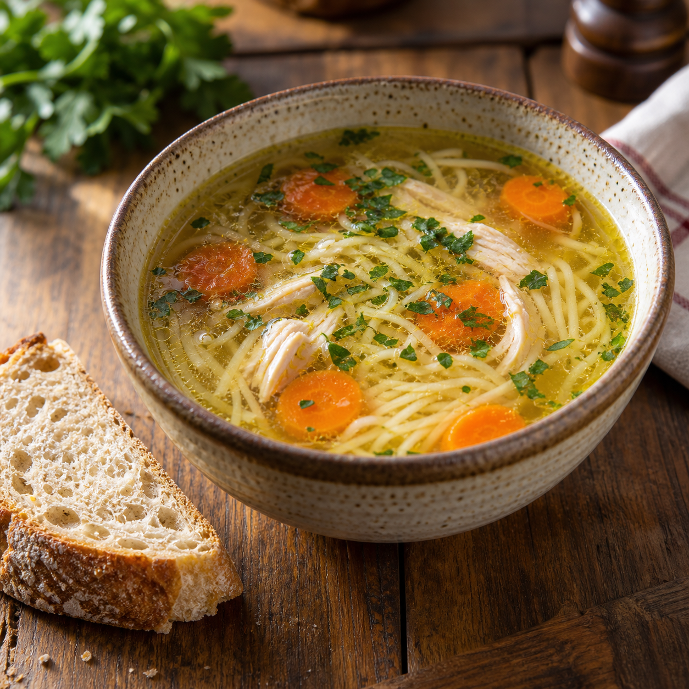

Danie dnia
od poniedziałku do piątku
Zupa + drugie danie — sprawdzony zestaw na szybki, sycący obiad w tygodniu. Przykładowe dania: rosół, flaczki, kotlet schabowy, gulasz wieprzowy, bigos z pieczywem.
Aktualne menu i ceny każdego dnia publikujemy na Facebooku.